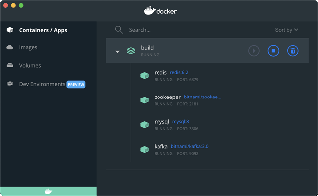

${user_name} @ ${created_at} ${delete_action}
${content}
${comment_replies}
${comment_action}
${comment_reply_form}
../git/BEFORE.md
对于Warp Exchange项目，我们以Maven为构建工具，把每个模块作为一个Maven的项目管理，并抽取出公共逻辑放入common模块，结构如下：
为了简化版本和依赖管理，我们用parent模块管理最基础的pom.xml，其他模块直接从parent继承，能大大简化各自的pom.xml。parent模块pom.xml内容如下：
<project xmlns="http://maven.apache.org/POM/4.0.0"
xmlns:xsi="http://www.w3.org/2001/XMLSchema-instance"
xsi:schemaLocation="http://maven.apache.org/POM/4.0.0
http://maven.apache.org/xsd/maven-4.0.0.xsd"
>
<modelVersion>4.0.0</modelVersion>
<groupId>com.itranswarp.exchange</groupId>
<artifactId>parent</artifactId>
<version>1.0</version>
<packaging>pom</packaging>
<!-- 继承自SpringBoot Starter Parent -->
<parent>
<groupId>org.springframework.boot</groupId>
<artifactId>spring-boot-starter-parent</artifactId>
<!-- SpringBoot版本 -->
<version>3.0.0</version>
</parent>
<properties>
<!-- 项目版本 -->
<project.version>1.0</project.version>
<project.build.sourceEncoding>UTF-8</project.build.sourceEncoding>
<project.reporting.outputEncoding>UTF-8</project.reporting.outputEncoding>
<!-- Java编译和运行版本 -->
<maven.compiler.source>17</maven.compiler.source>
<maven.compiler.target>17</maven.compiler.target>
<java.version>17</java.version>
<!-- 定义第三方组件的版本 -->
<pebble.version>3.2.0</pebble.version>
<springcloud.version>2022.0.0</springcloud.version>
<springdoc.version>2.0.0</springdoc.version>
<vertx.version>4.3.1</vertx.version>
</properties>
<!-- 引入SpringCloud依赖 -->
<dependencyManagement>
<dependencies>
<dependency>
<groupId>org.springframework.cloud</groupId>
<artifactId>spring-cloud-dependencies</artifactId>
<version>${springcloud.version}</version>
<type>pom</type>
<scope>import</scope>
</dependency>
</dependencies>
</dependencyManagement>
<!-- 共享的依赖管理 -->
<dependencies>
<!-- 依赖JUnit5 -->
<dependency>
<groupId>org.junit.jupiter</groupId>
<artifactId>junit-jupiter-api</artifactId>
<scope>test</scope>
</dependency>
<dependency>
<groupId>org.junit.jupiter</groupId>
<artifactId>junit-jupiter-params</artifactId>
<scope>test</scope>
</dependency>
<dependency>
<groupId>org.junit.jupiter</groupId>
<artifactId>junit-jupiter-engine</artifactId>
<scope>test</scope>
</dependency>
<!-- 依赖SpringTest -->
<dependency>
<groupId>org.springframework</groupId>
<artifactId>spring-test</artifactId>
<scope>test</scope>
</dependency>
</dependencies>
<build>
<pluginManagement>
<plugins>
<!-- 引入创建可执行Jar的插件 -->
<plugin>
<groupId>org.springframework.boot</groupId>
<artifactId>spring-boot-maven-plugin</artifactId>
</plugin>
</plugins>
</pluginManagement>
</build>
</project>
上述pom.xml中，除了写死的Spring Boot版本、Java运行版本、项目版本外，其他引入的版本均以<xxx.version>1.23</xxx.version>的形式定义，以便后续可以用${xxx.version}引用版本号，避免了同一个组件出现多个写死的版本定义。
对其他业务模块，引入parent的pom.xml可大大简化配置。以ui模块为例，其pom.xml如下：
<project xmlns="http://maven.apache.org/POM/4.0.0"
xmlns:xsi="http://www.w3.org/2001/XMLSchema-instance"
xsi:schemaLocation="http://maven.apache.org/POM/4.0.0
http://maven.apache.org/xsd/maven-4.0.0.xsd"
>
<modelVersion>4.0.0</modelVersion>
<!-- 指定Parent -->
<parent>
<groupId>com.itranswarp.exchange</groupId>
<artifactId>parent</artifactId>
<version>1.0</version>
<!-- Parent POM的相对路径 -->
<relativePath>../parent/pom.xml</relativePath>
</parent>
<!-- 当前模块名称 -->
<artifactId>ui</artifactId>
<dependencies>
<!-- 依赖SpringCloud Config客户端 -->
<dependency>
<groupId>org.springframework.cloud</groupId>
<artifactId>spring-cloud-starter-config</artifactId>
</dependency>
<!-- 依赖SpringBoot Actuator -->
<dependency>
<groupId>org.springframework.boot</groupId>
<artifactId>spring-boot-starter-actuator</artifactId>
</dependency>
<!-- 依赖Common模块 -->
<dependency>
<groupId>com.itranswarp.exchange</groupId>
<artifactId>common</artifactId>
<version>${project.version}</version>
</dependency>
<!-- 依赖第三方模块 -->
<dependency>
<groupId>io.pebbletemplates</groupId>
<artifactId>pebble-spring-boot-starter</artifactId>
<version>${pebble.version}</version>
</dependency>
</dependencies>
<build>
<!-- 指定输出文件名 -->
<finalName>${project.artifactId}</finalName>
<!-- 创建SpringBoot可执行jar -->
<plugins>
<plugin>
<groupId>org.springframework.boot</groupId>
<artifactId>spring-boot-maven-plugin</artifactId>
</plugin>
</plugins>
</build>
</project>
因为我们在parent的pom.xml中引入了Spring Cloud的依赖管理，因此，无需指定相关组件的版本。只有我们自己编写的组件和未在Spring Boot和Spring Cloud中引入的组件，才需要指定版本。
最后，我们还需要一个build模块，把所有模块放到一起编译。建立build文件夹并创建pom.xml如下：
<project xmlns="http://maven.apache.org/POM/4.0.0"
xmlns:xsi="http://www.w3.org/2001/XMLSchema-instance"
xsi:schemaLocation="http://maven.apache.org/POM/4.0.0
http://maven.apache.org/maven-v4_0_0.xsd"
>
<modelVersion>4.0.0</modelVersion>
<groupId>com.itranswarp.exchange</groupId>
<artifactId>build</artifactId>
<version>1.0</version>
<packaging>pom</packaging>
<name>Warp Exchange</name>
<!-- 按相对路径列出所有模块 -->
<modules>
<module>../common</module>
<module>../config</module>
<module>../parent</module>
<module>../push</module>
<module>../quotation</module>
<module>../trading-api</module>
<module>../trading-engine</module>
<module>../trading-sequencer</module>
<module>../ui</module>
</modules>
</project>
我们还需要创建目录config-repo来存储Spring Cloud Config服务器端的配置文件。
最后，将所有模块导入IDE，可正常开发、编译、运行。如果要在命令行模式下运行，进入build文件夹使用Maven编译即可：
warpexchange $ cd build && mvn clean package
在本地开发时，我们需要经常调试代码。除了安装JDK，选择一个IDE外，我们还需要在本地运行MySQL、Redis、Kafka，以及Kafka依赖的ZooKeeper服务。
考虑到手动安装各个服务在不同操作系统下的差异，以及初始化数据非常麻烦，我们使用Docker Desktop来运行这些基础服务，需要在build目录下编写一个docker-compose.yml文件定义我们要运行的所有服务：
version: "3"
services:
zookeeper:
image: bitnami/zookeeper:3.5
container_name: zookeeper
ports:
- "2181:2181"
environment:
- ALLOW_ANONYMOUS_LOGIN=yes
volumes:
- "./docker/zookeeper-data:/bitnami"
kafka:
image: bitnami/kafka:3.0
container_name: kafka
ports:
- "9092:9092"
depends_on:
- zookeeper
environment:
- KAFKA_BROKER_ID=1
- KAFKA_CFG_LISTENERS=PLAINTEXT://:9092
- KAFKA_CFG_ADVERTISED_LISTENERS=PLAINTEXT://127.0.0.1:9092
- KAFKA_CFG_ZOOKEEPER_CONNECT=zookeeper:2181
- KAFKA_CFG_AUTO_CREATE_TOPICS_ENABLE=true
- ALLOW_PLAINTEXT_LISTENER=yes
volumes:
- "./docker/kafka-data:/bitnami"
redis:
image: redis:6.2
container_name: redis
ports:
- "6379:6379"
volumes:
- "./docker/redis-data:/data"
mysql:
image: mysql:8.0
container_name: mysql
ports:
- "3306:3306"
command: --default-authentication-plugin=mysql_native_password
environment:
- MYSQL_ROOT_PASSWORD=password
volumes:
- "./sql/schema.sql:/docker-entrypoint-initdb.d/1-schema.sql:ro"
- "./docker/mysql-data:/var/lib/mysql"
在上述docker-compose.yml文件中，我们定义了MySQL、Redis、Kafka以及Kafka依赖的ZooKeeper服务，各服务均暴露标准端口，且MySQL的root口令设置为password，第一次启动MySQL时，使用sql/schema.sql文件初始化数据库表结构。所有数据盘均挂载到build目录下的docker目录。
在build目录下运行docker-compose up -d即可启动容器：
build $ docker-compose up -d
Creating network "build_default" with the default driver
Creating zookeeper ... done
Creating mysql ... done
Creating redis ... done
Creating kafka ... done
在Docker Desktop中可看到运行状态：

如果要删除开发环境的所有数据，首先停止运行Docker容器进程并删除，然后删除build目录下的docker目录，重新运行docker-compose即可。
Spring Cloud Config是Spring Cloud的一个子项目，它的主要目的是解决多个Spring Boot应用启动时，应该如何读取配置文件的问题。
对于单体应用，即一个独立的Spring Boot应用，我们会把配置写在application.yml文件中。如果配置需要针对多个环境，可以用---分隔并标注好环境：
# application.yml
# 通用配置:
spring:
datasource:
url: jdbc:mysql://localhost/test
---
# test profile:
spring:
config:
activate:
on-profile: test
datasource:
url: jdbc:mysql://172.16.0.100/test
这种配置方式针对单个Spring Boot应用是可行的，但是，针对分布式应用，有多个Spring Boot应用需要启动时，分散在各个应用中的配置既不便于管理，也不便于复用相同的配置。
Spring Cloud Config提供了一个通用的分布式应用的配置解决方案。它把配置分为两部分：
我们先来看看如何搭建一个Spring Cloud Config Server，即配置服务器。
首先，在config模块中引入spring-cloud-config-server依赖：
<dependency>
<groupId>org.springframework.cloud</groupId>
<artifactId>spring-cloud-config-server</artifactId>
</dependency>
然后，编写一个ConfigApplication入口，标注@EnableConfigServer：
@EnableConfigServer
@SpringBootApplication
public class ConfigApplication {
public static void main(String[] args) {
SpringApplication.run(ConfigApplication.class, args);
}
}
最后，在application.yml中设置如何搜索配置。Spring Cloud Config支持多种配置方式，包括从本地文件、Git仓库、数据库等多个地方读取配置。这里我们选择以本地文件的方式读取配置文件，这也是最简单的一种配置方式：
# 配置服务器的端口，通常设置为8888:
server:
port: 8888
spring:
application:
name: config-server
profiles:
# 从文件读取配置时，Config Server激活的profile必须设定为native:
active: native
cloud:
config:
server:
native:
# 设置配置文件的搜索路径:
search-locations: file:./config-repo, file:../config-repo, file:../../config-repo
在config-repo目录下，存放的就是一系列配置文件：
config-repo/
├── application-default.yml
├── application-test.yml
├── application.yml
├── push.yml
├── quotation.yml
├── trading-api.yml
├── trading-engine.yml
├── trading-sequencer.yml
├── ui-default.yml
└── ui.yml
至此，配置服务器就完成了，直接运行ConfigApplication即可启动配置服务器。在开发过程中，保持配置服务器在后台运行即可。
接下来，对于每个负责业务的Spring Boot应用，我们需要从Spring Cloud Config Server读取配置。读取配置并不是说本地零配置，还是需要一点基础配置信息。以ui项目为例，编写application.yml如下：
spring:
application:
# 设置app名称:
name: ui
config:
# 导入Config Server地址:
import: configserver:${CONFIG_SERVER:http://localhost:8888}
上述默认的Config Server配置为http://localhost:8888，也可以通过环境变量指定Config Server的地址。
下一步是在ui模块的pom.xml中添加依赖：
<dependency>
<groupId>org.springframework.cloud</groupId>
<artifactId>spring-cloud-starter-config</artifactId>
</dependency>
接下来正常启动UIApplication，该应用就会自动从Config Server读取配置。由于我们指定了应用的名称是ui，且默认的profile是default，因此，Config Server将返回以下4个配置文件：
前面的配置文件优先级较高，后面的配置文件优先级较低。如果出现相同的配置项，则在优先级高的配置生效。
我们可以在浏览器访问http://localhost:8888/ui/default看到Config Server返回的配置，它是一个JSON文件：
{
"name": "ui",
"profiles": [
"default"
],
"label": null,
"version": null,
"state": null,
"propertySources": [
{
"name": "file:../config-repo/ui-default.yml",
"source": {...}
},
{
"name": "file:../config-repo/application-default.yml",
"source": {...}
},
{
"name": "file:../config-repo/ui.yml",
"source": {...}
},
{
"name": "file:../config-repo/application.yml",
"source": {...}
}
]
}
如果我们启动UIApplication时传入SPRING_PROFILES_ACTIVE=test，将profile设置为test，则Config Server返回的文件如下：
可以通过http://localhost:8888/ui/test查看返回的配置。由于文件ui-test.yml不存在，因此，实际配置由3个文件合并而成。
我们可以很容易地看到，一个Spring Boot应用在启动时，首先要设置自己的name并导入Config Server的URL，再根据当前活动的profile，由Config Server返回多个配置文件：
其中，{name}-{xxx}.yml是针对某个应用+某个profile的特定配置，{name}.yml是针对某个应用+所有profile的配置，application-{profile}.yml是针对某个profile的全局配置，application.yml是所有应用的全局配置。搭配各种配置文件就可以灵活组合配置。一般来说，全局默认的配置放在application.yml中，例如数据库连接：
spring:
datasource:
url: jdbc:mysql://localhost/test
这样保证了默认连接到本地数据库，在生产环境中会直接报错而不是连接到错误的数据库。
在生产环境，例如profile设置为prod，则可以将数据库连接写在application-prod.yml中，使得所有生产环境的应用读取到的数据库连接是一致的：
spring:
datasource:
url: jdbc:mysql://172.16.0.100/prod_db
某个应用自己特定的配置则应当放到{name}.yml和{name}-{profile}.yml中。
在设置好各个配置文件后，应当通过浏览器检查Config Server返回的配置是否符合预期。
Spring Cloud Config还支持配置多个profile，以及从加密的配置源读取配置等。如果遇到更复杂的需求，可参考Spring Cloud Config的文档。
需要特别注意，在config-repo的配置文件里，使用的环境变量，不是Config Server的环境变量，而是具体某个Spring Boot应用的环境变量。
我们举个例子：假定ui.yml定义如下：
server:
port: ${APP_PORT:8000}
当UIApplication启动时，它获得的配置为server.port=${APP_PORT:8000}。Config Server不会替换任何环境变量，而是将它们原封不动地返回给UIApplication，由UIApplication根据自己的环境变量解析后获得最终配置。如果我们启动UIApplication时传入环境变量：
$ java -DAPP_PORT=7000 -jar ui.jar
则UIApplication最终读取的配置server.port为7000。
可见，使用Spring Cloud Config时，读取配置文件步骤如下：
application.yml，获得name和Config Server地址；name、profile和Config Server地址，获得一个或多个有优先级的配置文件；环境变量通常用于配置一些敏感信息，如数据库连接口令，它们不适合明文写在config-repo的配置文件里。
启动一个Spring Boot应用时，如果出现Unable to load config data错误：
java.lang.IllegalStateException: Unable to load config data from 'configserver:http://localhost:8888'
at org.springframework.boot.context.config.StandardConfigDataLocationResolver.getReferences
at ...
需要检查是否在pom.xml中引入了spring-cloud-starter-config，因为没有引入该依赖时，应用无法解析本地配置的import: configserver:xxx。
如果在启动一个Spring Boot应用时，Config Server没有运行，通常错误信息是因为没有读取到配置导致无法创建某个Bean。
我们以Spring Boot为基础，并通过Maven的模块化配置搭建了项目的基本结构，依赖的基础组件通过Docker Desktop运行并初始化数据。对于多个服务组成的分布式应用来说，使用Spring Cloud Config可满足应用的配置需求。